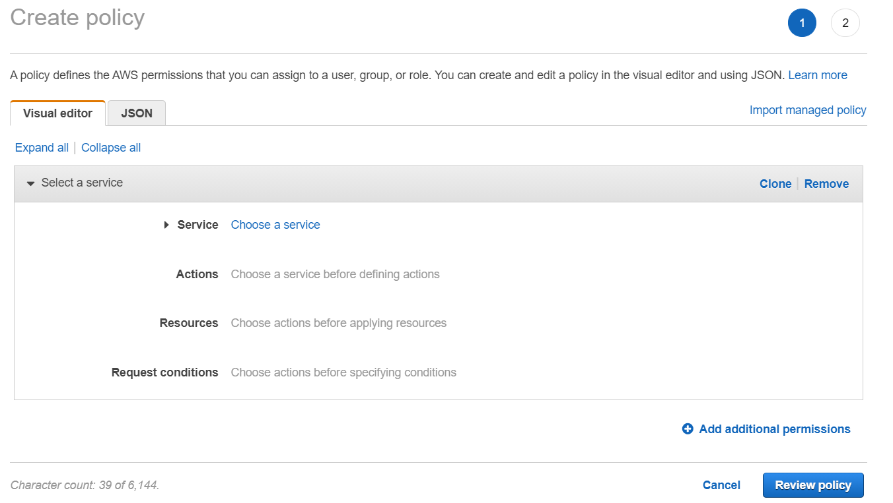
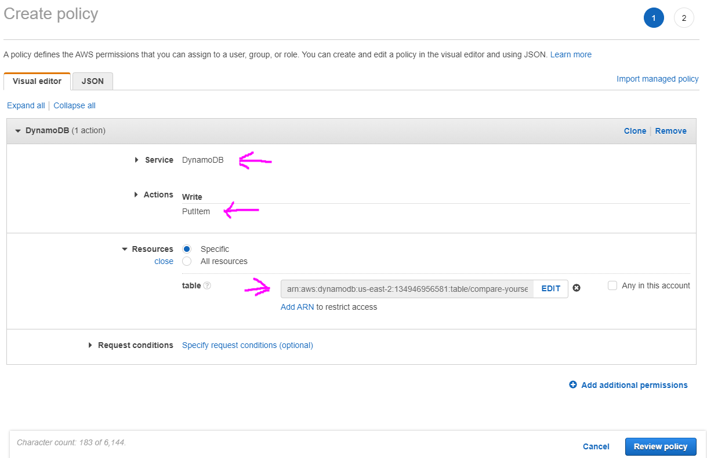
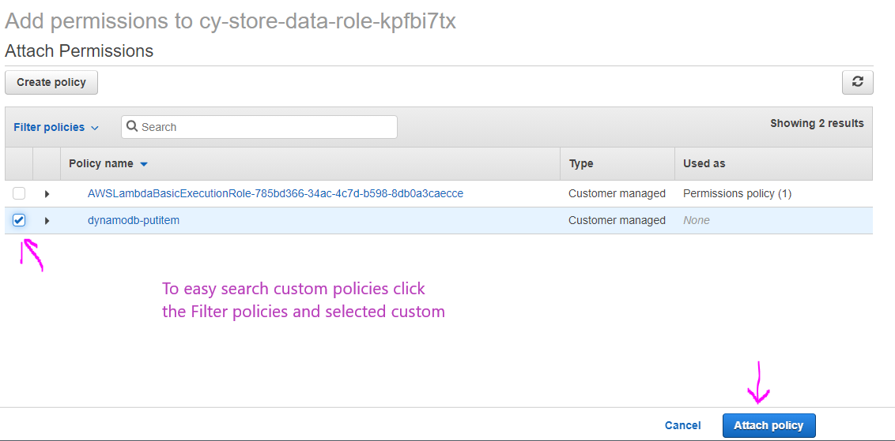

If we are working with DynamoDB it is not good practice to use the full access policy, we should use custom and more specific serving only the purpose it needs, not unlimited rights.
To create a policy go to IAM service and click Policies and click Create policy
Select the Service, then select which actions you want to use for this role (PutItem in this example), select all you need and click the close link. Also provide the ARN(Amazon Resource Name) code for the resource you want to use (table in this example, because we are creating policy for a DB). You can see the DynamoDB table ARN in the Overview tab. Click AddARN link and paste the arn code
After clicking Review policy, now give it a name and click Create policy
Go to Roles from the menu on the left, select some role and from the Attach policies button you can attach our newly created policy. Search it and select it by checking the box on the left and click Attach policy buton
